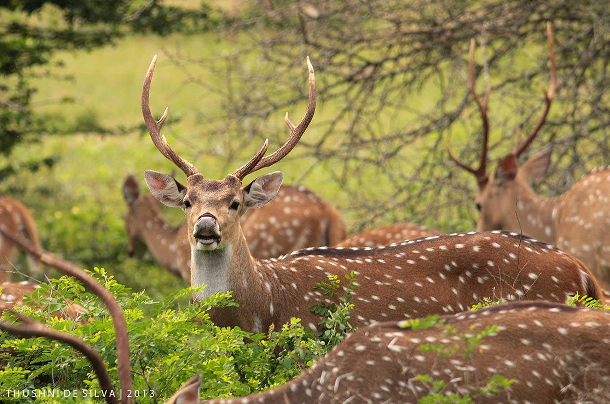

Districts of Uva Province

Explore the stunning landscapes and cultural heritage of Monaragala.
Biso Pokuna is an ancient royal bathing pond located in the majestic ruins of the Sigiriya complex in Sri Lanka. Believed to have been used by Queen Kassapa’s consorts, this pond is an extraordinary example of ancient hydro-engineering.
Carved into the rock with precision, the pond features an advanced water flow system, showcasing the sophistication of ancient Sri Lankan architecture. The lush surroundings and historical significance make it a must-visit site for history enthusiasts.


Dematamal Viharaya is a serene and ancient Buddhist temple located in the Monaragala district of Sri Lanka. Known for its tranquil atmosphere and historical significance, this temple is a hidden gem for those seeking spiritual solace and cultural exploration.
The temple is believed to have been established during the reign of King Saddhatissa, a prominent ruler of the Anuradhapura Kingdom. It features ancient stupas, rock inscriptions, and a peaceful environment surrounded by lush greenery, making it a perfect destination for meditation and reflection.


Kataragama Kirivehera is a sacred Buddhist stupa located in the holy town of Kataragama in Sri Lanka. It is one of the 16 most important pilgrimage sites (Solosmasthana) in the country and holds immense religious significance for Buddhists.
The stupa is believed to have been built by King Mahasena during the 3rd century BCE. It is renowned for its unique cylindrical shape and is surrounded by a serene atmosphere, making it a popular destination for pilgrims and tourists alike.
Explore the stunning landscapes and cultural heritage of Badulla.
The Nine Arch Bridge, also known as the Bridge in the Sky, is a stunning architectural marvel located in Ella, Sri Lanka. Built during the British colonial era, this bridge is a testament to the engineering brilliance of the early 20th century.
Surrounded by lush greenery and tea plantations, the Nine Arch Bridge is a popular tourist attraction and a favorite spot for photography. The bridge is still in use today, and visitors can witness trains passing through this iconic structure while enjoying the breathtaking views of the surrounding landscape.


Ella is a picturesque small town nestled in the Badulla District of Sri Lanka, known for its stunning landscapes, lush greenery, and cool climate. Surrounded by rolling hills, tea plantations, and waterfalls, Ella is a paradise for nature lovers and adventure seekers.
Popular attractions in Ella include the Nine Arch Bridge, Little Adam's Peak, Ella Rock, and Ravana Falls. The town also offers a variety of hiking trails, cozy cafes, and breathtaking viewpoints, making it a must-visit destination for travelers.

Dunhinda Falls is one of the most beautiful and iconic waterfalls in Sri Lanka, located near the town of Badulla. Known for its majestic beauty and the misty spray that surrounds it, Dunhinda Falls is a must-visit destination for nature lovers and photographers.
The waterfall cascades from a height of 64 meters (210 feet) and is surrounded by lush greenery, creating a picturesque and serene environment. The name "Dunhinda" translates to "spraying waterfall," which perfectly describes the misty spray that can be seen from a distance.